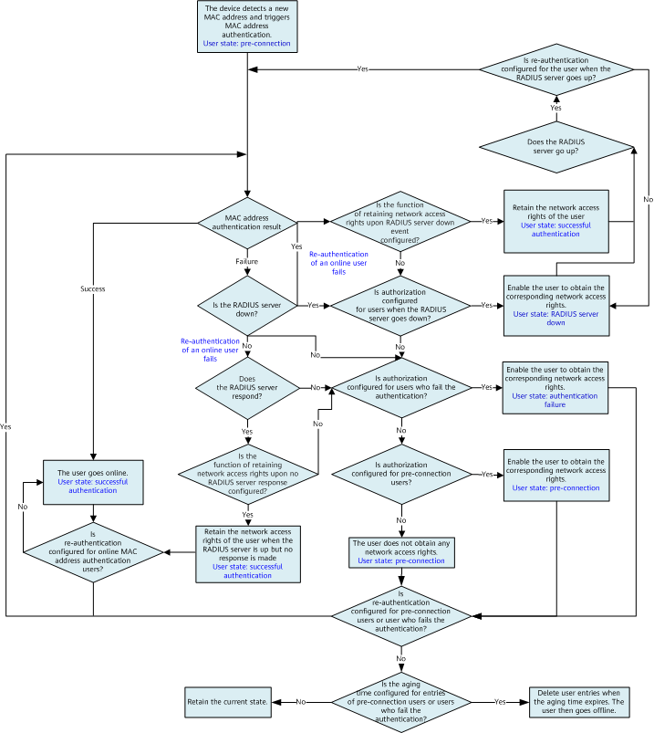

MAC Address Authentication Process
Figure 1 shows the processing logic of the access device during MAC address authentication. The following uses RADIUS authentication as an example.
- The access device detects a new MAC address, triggering MAC address authentication for the user.
- The access device sends a RADIUS Access-Request packet to the RADIUS server, requesting the RADIUS server to perform MAC address authentication for the user.
- If the MAC address authentication succeeds, the user goes online.
- If the MAC address authentication fails and the RADIUS server is down (for details, see RADIUS Server Status Detection), the access device checks whether it is configured to authorize users when the RADIUS server is down, to authorize users who fail authentication, or to authorize pre-connection users (for details, see NAC Bypass Mechanism). The user then obtains the corresponding network access rights, if any.
- If the MAC address authentication fails and the RADIUS server is up, the access device checks whether it is configured to authorize users who fail authentication or to authorize pre-connection users. The user then obtains the corresponding network access rights, if any.
- For users in abnormal authentication state, the access device can be configured to re-authenticate the users so that they can obtain network access rights as soon as possible. For users who have passed MAC address authentication, re-authentication on the users can ensure the validity of user identities (for details, see MAC Address Re-authentication).
- If re-authentication after a successful authentication fails and the authentication server is down, the access device checks the following in this sequence: the configuration of retaining the user's network access rights upon the authentication server down event, the authorization configuration upon the authentication server down event, the authorization configuration upon authentication failures, and the authorization configuration for pre-connection users. The access device then authorizes the user accordingly. If the RADIUS server is up but does not respond, the access device checks the following in this sequence: the configuration of retaining the user's network access rights upon no authentication server response, the authorization configuration upon authentication failures, and the authorization configuration for pre-connection users. The access device then authorizes the user accordingly.
Figure 1 Processing logic of the access device